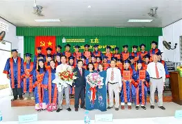

T
Từ khi thành lập đến nay, Trường đã tuyển sinh được 15 khóa với trên 4.500 học viên trúng tuyển và nhập học. Hoạt động đào tạo nghề của nhà Trường luôn gắn liền với việc thực hành, thực tập thực tế tại các cơ quan, công ty, doanh nghiệp và bám sát nhu cầu của xã hội, hầu hết học sinh của trường có việc làm sau khi tốt nghiệp.
Trường Trung cấp nghề Hồng Ngự được thành lập theo Quyết định số 73/QĐ-UBND-HC, ngày 20 tháng 6 năm 2007 của UBND tỉnh Đồng Tháp tiền thân là Trung tâm dạy nghề huyện Hồng Ngự.
Những năm qua, công tác đào tạo trung cấp nghề luôn được nhà trường quan tâm thực hiện có hiệu quả, trong đó có 3 ngành nghề đào tạo trọng điểm gồm: Điện công nghiệp; Chế biến và bảo quản thủy sản và Nuôi trồng thủy sản nước ngọt.
Dù phải đương đầu với nhiều khó khăn thách thức trong giai đoạn hiện nay, Lãnh đạo Nhà trường đã tập trung chỉ đạo các phòng, khoa, triển khai thực hiện các nhiệm vụ đạt hiệu quả đề ra. Năm học 2021–2022, Trường Trung cấp Hồng Ngự tuyển sinh, đào tạo và liên kết đào tạo trình độ thạc sĩ, đại học, cao đẳng, trung cấp, sơ cấp. Bên cạnh đó, Trường còn phối hợp với các đơn vị mở 19 lớp ngắn hạn thuộc trình độ Trung cấp, Cao đẳng lên Đại học với 498 học viên và 06 lớp lái xe A1, B2 với 329 học viên.
bấm vào để xem giờ.
Lớp K8VP
TRƯỜNG TRUNG CẤP HỒNG NGỰ
Biên tập: HUỲNH THANH LIÊM
QL30, PHƯỜNG AN BÌNH, TỈNH ĐỒNG THÁP